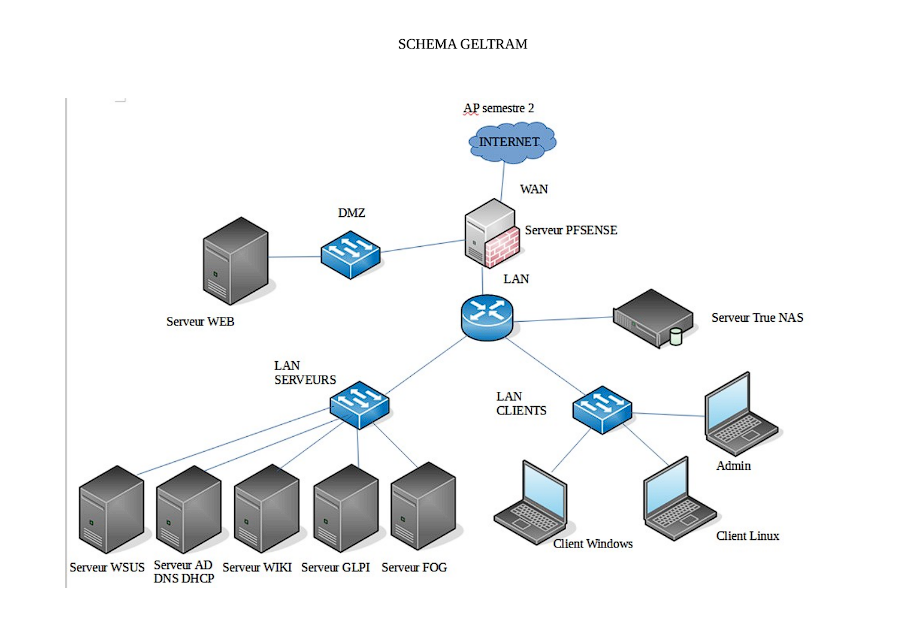
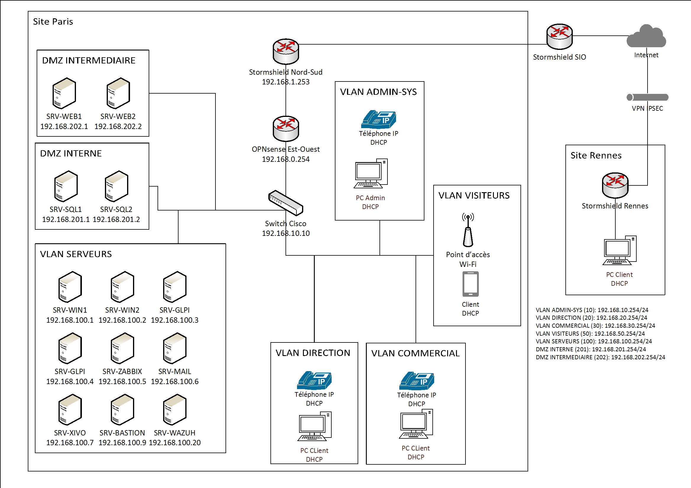

Expériences
Projets réalisés durant le BTS SIO
Projet d'infrastructure réseau première année (AP semestre 1) :
- Autonomie de réseau (serveur DHCP)
- Serveur Web LAMP (Linux, Apache, MySQL, PHP)
- Administration sécurisée des serveurs en SSH
- Segmentation réseau en VLAN
- Point d'accès Wi-Fi

Projet d'infrastructure réseau première année (AP semestre 2) :
- Contrôleur de domaine et serveur Active Directory (Windows Server)
- Serveur Web isolé en DMZ
- Système de sauvegarde (PBS)
- Serveur de mises à jour (WSUS)
- Serveur de clonage (FOG)
- Serveur de ticketing (GLPI)
- Pare-feu pfSense

Projet d'infrastructure réseau deuxième année (AP semestre 3A) :
- Réplication du contrôleur de domaine
- Réplication du serveur Web en cluster et haute disponibilité
- Réplication du serveur MySQL en cluster
- Filtrage réseau avec pare-feu Stormshield
- Routage inter-VLAN avec routeur Cisco
- Segmentation VLAN par port sur Switch Cisco

Projet d'infrastructure réseau deuxième année (AP semestre 3B) :
- Serveur de supervision (Zabbix)
- SIEM (Security Information and Event Management) (Wazuh)
- VLAN Visiteurs avec point d'accès Wi-Fi

Projet d'infrastructure réseau deuxième année (AP semestre 4) :
- Mise en place d'un portail captif sur Stormshield
- Ajout d'un site distant et d'un tunnel IPSec (OpenVPN)
- VPN nomade
- Ajout de la téléphonie IP avec serveur VoIP (XIVO)
- Serveur Mail (Zimbra)
- Authentification avec serveur RADIUS
- Gestion des connexions distantes avec serveur Bastion (Guacamole)

Mission de stage en cours de première année chez PHARMAGEST (5 semaines) :
- Mise en place d'un serveur WSUS
- Préparation et installation de matériel informatique
Missions de stage en cours de deuxième année à la CMA (Chambre des Métiers et de l'Artisanat) (7 semaines) :
- Support informatique (helpdesk) avec un outil dédié développé en interne
- Inventaire des adresses MAC des postes utilisateur sur l'ensemble du site et relevé des mises à jour
- Capture et déploiement d'images sur des postes utilisateur avec Macrium et FOG
Tableau de synthèse - Epreuve E5 : Tableau synthèse Epreuve E5